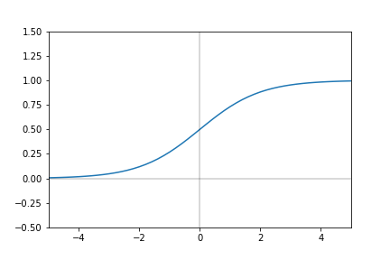
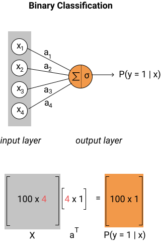

In the last few screens, we replicated linear regression as a feedforward neural network model and learned about nonlinear activation functions. We now have a better idea of what defines a neural network. So far, we know that neural networks need:
We'll now explore how to build a neural network that replicates a logistic regression model. We'll start with a quick recap.
Binary Classification and Logistic Regression
In binary classification, we're interested in finding a model that can differentiate between two categorical values (usually 0 and 1 are used). The values 0 and 1 don't have any numerical weight and are instead act as numerical placeholders for the two categories. We can instead try to learn the probability that a given observation belongs in either category.
In the language of conditional probability, we're interested in the probability that a given observation belongs to each category:
Because the universe of possibilities only consists of these two categories, the probabilities for both must add up to . This lets us simplify what we want a binary classification model to learn:
If , we want the model to assign it to category 1. If , we want the model to assign it to category 0.
Implementing A Logistic Regression Model
A logistic regression model consists of two main components:
Combining these two steps yields the following definition of a logistic regression model:
In neural networks literature, this function is usually referred to as the sigmoid function:
Here's a plot of the sigmoid function:

You'll notice that the sigmoid function has horizontal asymptotes at 0 and 1, which means any input value will always output a value between 0 and 1.
To implement a network that performs classification, the only thing we need to change from the linear regression network we implemented is the activation function. Instead of using the identity function, we need to use the sigmoid function.
Here's a diagram of this network:

1 for each row named "bias" to the class_features dataframe.log_train(class_features, class_labels): takes in the class_features dataframe and class_labels series and performs model fitting. sigmoid(linear_combination): takes in a NumPy 2D array and applies the sigmoid function for every value: log_feedforward(class_features, log_train_weights): takes in the class_features dataframe and the log_train_weights NumPy array.class_features (100 rows by 4 columns) and log_train_weights (4 rows by 1 column) and assign to linear_combination.sigmoid() function to transform linear_combinations and assign the result to log_predictions.log_predictions to a class label:0.5, overwrite the value to 1.0.5, overwrite the value to 0.log_predictionslog_train() and log_feedforward() functions. The final predictions will be stored in log_predictions.xxxxxxxxxxfrom sklearn.linear_model import SGDClassifierfrom sklearn.datasets import make_classificationclass_data = make_classification(n_samples=100, n_features=4, random_state=1)class_features = pd.DataFrame(class_data[0])class_labels = pd.Series(class_data[1])# Uncomment this code when you're ready to test your functions.# log_train_weights = log_train(class_features, class_labels)# log_predictions = log_feedforward(class_features, log_train_weights)class_features["bias"] = 1def log_train(class_features, class_labels): sg = SGDClassifier() sg.fit(class_features, class_labels) return sg.coef_def sigmoid(linear_combination): return 1/(1+np.exp(-linear_combination))def log_feedforward(class_features, log_train_weights): linear_combination = np.dot(class_features, log_train_weights.T) log_predictions = sigmoid(linear_combination) log_predictions[log_predictions >= 0.5] = 1 log_predictions[log_predictions < 0.5] = 0 return log_predictionslog_train_weights = log_train(class_features, class_labels)log_predictions = log_feedforward(class_features, log_train_weights)x
from sklearn.linear_model import SGDClassifierfrom sklearn.datasets import make_classificationclass_data = make_classification(n_samples=100, n_features=4, random_state=1)class_features = pd.DataFrame(class_data[0])class_labels = pd.Series(class_data[1])class_features['bias'] = 1def log_train(X, y): clf = SGDClassifier() clf.fit(X, y) return clf.coef_def sigmoid(z): return 1/(1 + np.exp(-z))def log_feedforward(X, w): linear_combination = np.dot(X, w.T) log_predictions = sigmoid(linear_combination) log_predictions[log_predictions <= 0.5] = 0 log_predictions[log_predictions > 0.5] = 1 return log_predictions# Uncomment this code when you're ready to test your functions.log_train_weights = log_train(class_features, class_labels)log_predictions = log_feedforward(class_features, log_train_weights)print(log_train_weights.shape)log_predictions[:5]